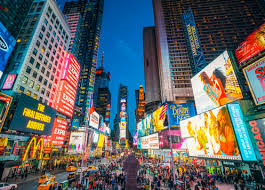
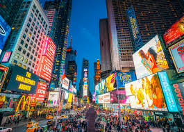

New York, often called New York City to distinguish it from New York State, or NYC for short, is the most populous city in the United States.
With a 2020 population of 8,804,190 distributed over 300.46 square miles (778.2 km2),New York City is also the most densely populated major city in the United States.
Located at the southern tip of the State of New York, the city is the center of the New York metropolitan area, the largest metropolitan area in the world by urban area.With over 20 million people in its metropolitan statistical area and approximately 23 million in its combined statistical area, it is one of the world's most populous megacities.
New York City has been described as the cultural, financial, and media capital of the world, significantly influencing commerce,entertainment, research, technology, education, politics, tourism, art, fashion, and sports, and is the most photographed city in the world.
Home to the headquarters of the United Nations,New York is an important center for international diplomacy,and has sometimes been called the capital of the world.
 
